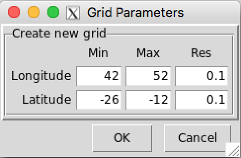
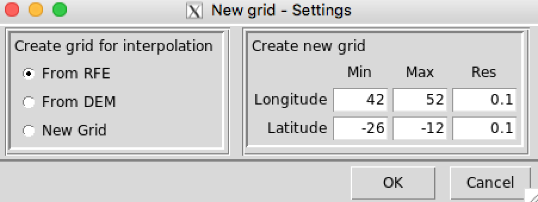

Merging Rainfall
The menu allows to combine a rain gauge and gridded satellite-based rainfall estimates (RFE) data. There are 4 sequential steps required to merge rainfall data.
The menu colored in lightblue indicates that this step does not need to repeat several times, you just run it only once, and you can use it later with the same source of RFE data.
Bias calculation
The sub-menu opens a dialog where you can select the method to compute the mean bias coefficients or estimate the parameters of the distribution and specify the required input.
- Select the method to correct the bias in RFE data using historical observed station data. There are three methods available:
- Quantile.Mapping: the correction of bias in the RFE data is performed by quantile mapping using distribution derived transformations to adjust the probability distribution of the RFE data such that it matches the probability distribution of the station data. A mixture of the Bernoulli and the Gamma distribution is chosen to fit the series from station data and RFE data. For each month of the year, the parameters of the distribution are calculated from station and RFE data series.
- Multiplicative.Bias.Var: this method consists to apply a multiplicative bias correction to the RFE data. A mean bias coefficients are computed for each day, dekad or month of the year according to the time step of the input data.
- Multiplicative.Bias.Mon: same as Multiplicative.Bias.Var, but the mean bias coefficients are computed for each month of the year regardless of the time step of the data.
- Select the file containing the station data to be used to calculate the mean bias coefficients or the parameters of the distribution. If the file is not yet listed, use the button to open it.
- Enter the full path to directory containing the RFE files, or use to browse it.
- Provide a sample file from the RFE data by selecting it from the drop-down list or open it by using the button .
- Specify the RFE filename format. See the section NetCDF filename format for more details on the format of NetCDF file names.
- Provide the elevation data as a Digital Elevation Model (DEM) from a NetCDF file.
- Enter the full path to directory to save the interpolated mean bias coefficients or parameters of the distribution, or browse it from .
- Use auxiliary variables to explain the trend-part of spatial variation when interpolating from inverse distance weighting or kriging, see below (12) for more details. Check the box corresponding to the variable to use.
- DEM: include elevation data as auxiliary variable.
- Slope: include slope data as auxiliary variable.
- Aspect: include aspect data as auxiliary variable.
- Lon: include longitude as auxiliary variable.
- Lat: include latitude as auxiliary variable.
- Select the time step of your data, there are three choices available: daily, dekadal and monthly data.
- Enter the start and end year of the period to be used to compute the mean bias coefficients or to estimate the parameters of the distribution.
- Select the source of data to create a grid onto which the mean bias coefficients or distribution parameters will be interpolated.
- From RFE: the RFE grid will be used
- From DEM: the DEM grid will be used
- New Grid: you can create your own grid with different resolution and extent, by selecting this option and clicking the button , which will display a dialog box allowing you to specify the resolution and the bounding box of the grid.

- Select the interpolation method to interpolate the mean bias coefficients or distribution parameters. You can select one of the following three interpolation methods on the drop-down list:
- Nearest Neighbor: this method does not use an auxiliary variables but takes the elevation as a third coordinate.
- Inverse Distance Weighted: with no auxiliary variables are used the interpolation is done with a simple inverse distance weighting, in the case where auxiliary variables are included the interpolation method becomes a weighted least squares prediction.
- Kriging: with no auxiliary variables are used the interpolation is performed with an ordinary kriging, in the case where auxiliary variables are included the interpolation method becomes a kriging with external drift.
- Define the neighborhood size in terms of number of nearest points for the Nearest Neighbor interpolation method.
- Multi.Lon: Maximum distance belong to longitude, it is represented as a multiplier of grid interpolation resolution. For example, suppose that the grid resolution is equal to 0.05 degree, if Multi.Lon is set to 10, then the maximum distance of points to be used belong to longitude is 0.5 degree, only observations within this distance from the prediction location are used to select the interpolated value.
- Multi.Lat: Maximum distance belong to latitude.
- Multi.Elv: Maximum height for elevation. The elevation data are divided into an interval of 100m. If Multi.Elv is set to 4, then maximum vertical distance to search the interpolated value is 400m.
- Define the neighborhood for the inverse distance weighted and kriging method.
- nmin: the maximum number of nearest observations that should be used to interpolate a point.
- nmax: the minimum number of nearest observations that should be used to interpolate a point.
- maxdist: maximum distance (in decimal degree) to be used to interpolate a point (search radius). maxdist specifies a circular search range to select the point.
- In case of Multiplicative.Bias.Var or Multiplicative.Bias.Mon, specify the prefix for the output file names.
Click when all the specifications are defined, then click on the button in the toolbar to run the process.
OUTPUT: Under the directory you specified to save the result (7), a directory called STN_RFE_Bias_<Input station data filename without extension> has been created.
- Quantile.Mapping: 24 files have bean created under this directory.
- An RData file named BIAS_PARAMS.RData containing all the data necessary to estimate the parameters of the distribution, and the fitted model and parameters at each station location and resampled RFE grid points for each month.
- 12 NetCDF files Bernoulli-Gamma_Pars.STN_<month>.nc containing the interpolated parameters for the station data. Here <month> is an integer from 1 to 12 representing the months of the year.
- 12 NetCDF files Bernoulli-Gamma_Pars.RFE_<month>.nc containing the interpolated parameters for the RFE data. Here <month> is an integer from 1 to 12 representing the months of the year.
- Multiplicative.Bias.Var:
- for daily data: 366 files have bean created under this directory, an RData file named BIAS_PARAMS.RData containing all the data necessary to calculate the mean bias factor, and the mean bias factor at each station location. 365 NetCDF files <filename prefix (15)>_<day>.nc containing the interpolated mean bias coefficients. Here <day> is an integer from 1 to 365 representing the days of the year.
- for dekadal data: 37 files have bean created under this directory, an RData file named BIAS_PARAMS.RData containing all the data necessary to calculate the mean bias factor, and the mean bias factor at each station location. 36 NetCDF files <filename prefix (15)>_<dekad>.nc containing the interpolated mean bias coefficients. Here <dekad> is an integer from 1 to 36 representing the dekads of the year.
- for monthly data: 13 files have bean created under this directory, an RData file named BIAS_PARAMS.RData containing all the data necessary to calculate the mean bias factor, and the mean bias factor at each station location. 12 NetCDF files <filename prefix (15)>_<month>.nc containing the interpolated mean bias coefficients. Here <month> is an integer from 1 to 12 representing the months of the year.
- Multiplicative.Bias.Mon: 13 files have bean created under this directory, an RData file named BIAS_PARAMS.RData containing all the data necessary to calculate the mean bias factor, and the mean bias factor at each station location. 12 NetCDF files <filename prefix (15)>_<month>.nc containing the interpolated mean bias coefficients. Here <month> is an integer from 1 to 12 representing the months of the year.
Apply bias correction
The sub-menu allows to apply the bias correction to the RFE data.
- Select the method used to calculate the mean bias coefficients or distribution parameters.
- Enter the full path to directory containing the RFE files, or use to browse it.
- Provide a sample file from the RFE data by selecting it from the drop-down list or open it by using the button .
- Specify the RFE filename format. See the section NetCDF filename format for more details on the format of NetCDF file names.
- Enter the full path to directory containing the mean bias or distribution parameters files.
- In case of Multiplicative.Bias.Var or Multiplicative.Bias.Mon, specify the prefix for the file name of the mean bias coefficients.
- Select the time step of the data.
- Enter the date range of the RFE data you want to adjust, make sure the date is valid, meaning that dates like 2016-06-31 and 2015-02-29 will throw an error.
- Specify the filename format of the adjusted RFE files.
- Enter the full path to directory to save the adjusted RFE files.
Click when all the specifications are defined, then click on the button in the toolbar to run the process.
OUTPUT: Under the directory you specified to save the result (5), a directory called Adjusted_RFE_Data_<start date>_<end date> has been created. The names of the files containing the adjusted RFE data had to be the same format as you provided in (9).
Compute Spatio-temporal Trend Coefficients
To estimate the parameters of the linear regression to be used on the Spatio-Temporal LM method when merging data, go to the sub-menu .
- Select the file containing the station data to be used to estimate the parameters of the linear regression. If the file is not yet listed, use the button to open it.
- Enter the full path to directory containing the RFE or the adjusted RFE files, or use to browse it.
- Provide a sample file from the RFE or adjusted RFE data by selecting it from the drop-down list or open it by using the button .
- Specify the RFE or adjusted RFE filename format. See the section NetCDF filename format for more details on the format of NetCDF file names.
- Provide the elevation data as a Digital Elevation Model (DEM) from a NetCDF file.
- Enter the full path to directory to save the interpolated parameters, or browse it from .
- Use auxiliary variables to explain the trend-part of spatial variation when interpolating from inverse distance weighting or kriging. Check the box corresponding to the variable to use.
- Select the time step of the data.
- Enter the start and end year of the period to be used to estimate parameters.
- Select the source of data to create a grid onto which the coefficients will be interpolated.
- Select the interpolation method to interpolate the parameters. You can select one of the following three interpolation methods on the drop-down list:
- Nearest Neighbor: this method does not use an auxiliary variables but takes the elevation as a third coordinate.
- Inverse Distance Weighted: with no auxiliary variables are used the interpolation is done with a simple inverse distance weighting, in the case where auxiliary variables are included the interpolation method becomes a weighted least squares prediction.
- Kriging: with no auxiliary variables are used the interpolation is performed with an ordinary kriging, in the case where auxiliary variables are included the interpolation method becomes a kriging with external drift.
- Define the neighborhood size in terms of number of nearest points for the Nearest Neighbor interpolation method.
- Multi.Lon: Maximum distance belong to longitude, it is represented as a multiplier of grid interpolation resolution. For example, suppose that the grid resolution is equal to 0.05 degree, if Multi.Lon is set to 10, then the maximum distance of points to be used belong to longitude is 0.5 degree, only observations within this distance from the prediction location are used to select the interpolated value.
- Multi.Lat: Maximum distance belong to latitude.
- Multi.Elv: Maximum height for elevation. The elevation data are divided into an interval of 100m. If Multi.Elv is set to 4, then maximum vertical distance to search the interpolated value is 400m.
- Define the neighborhood for the inverse distance weighted and kriging method.
- nmin: the maximum number of nearest observations that should be used to interpolate a point.
- nmax: the minimum number of nearest observations that should be used to interpolate a point.
- maxdist: maximum distance (in decimal degree) to be used to interpolate a point (search radius). maxdist specifies a circular search range to select the point.
Click when all the specifications are defined, then click on the button in the toolbar to run the process.
OUTPUT: Under the directory you specified to save the result (6), a directory called LMCoef_<Input station data filename without extension> has been created. 13 files have bean created under this directory, an RData file named LM_MODEL_PARS.RData containing all the data necessary to estimate the parameters of the linear regression, and the fitted model and parameters at each station location for each month. 12 NetCDF files <LM_Coefficient>_<month>.nc containing the interpolated parameters. Here <month> is an integer from 1 to 12 representing the months of the year.
Merging Data
To perform the merging, go to the sub-menu .
- Select the method to be used to merge station and RFE data. There are two ways to perform the merging.
- Regression Kriging: the regression kriging approach adopted here is performed by modeling the deterministic (spatial trend) and stochastic (residuals) part separately. It first fits a regression model (Generalized Linear Model) to predict the spatial trend, then interpolate the residuals by usign the inverse distance weighted method or kriging method by fitting a variogram for residuals.
- Spatio-Temporal LM: in this approach the deterministic part is fitted by a simple linear regression by taking into account the temporal components, i.e, it fits a linear regression between the station data and the RFE data extracted at the station locations for each month of the year, these models are used to predict the spatial trend, then interpolate the residuals.
- Select the file containing the station data.
Enter the full path to directory containing the RFE or adjusted RFE files, or use to browse it.
Note: You can directly combine the RFE data without bias correction with the station data.
- Provide a sample file from the RFE or adjusted RFE data by selecting it from the drop-down list or open it by using the button .
- Specify the RFE or adjusted RFE filename format.
- If you want to change the grid resolution and the extent of the merged data, check on
 Create Grid box, then click the button to set the required input to define the new grid.
Create Grid box, then click the button to set the required input to define the new grid.

- In case of Spatio-Temporal LM, enter the full path to directory containing the interpolated regression parameters.
- Select the time step of the data.
- Enter the date range of the data you want to merge, make sure the date is valid, meaning that dates like 2016-06-31 and 2015-02-29 will throw an error.
- Select the interpolation method. You can select one of the following two interpolation methods on the drop-down list:
- Inverse Distance Weighted: with no auxiliary variables are used the interpolation is done with a simple inverse distance weighting, in the case where auxiliary variables are included the interpolation method becomes a weighted least squares prediction.
- Kriging: with no auxiliary variables are used the interpolation is performed with an ordinary kriging, in the case where auxiliary variables are included the interpolation method becomes a kriging with external drift.
- Define the neighborhood for the inverse distance weighted and kriging method.
- nmin: the maximum number of nearest observations that should be used to interpolate a point.
- nmax: the minimum number of nearest observations that should be used to interpolate a point.
- maxdist: maximum distance (in decimal degree) to be used to interpolate a point (search radius). maxdist specifies a circular search range to select the point.
- Set the minimum number of stations to perform the merging. If the number of stations is less than these given values no mering will be performed.
- Min.Nb.Stn: Minimum number of stations with data to be used to do the merging.
- Min.No.Zero: Minimum number of non-zero station values to perform the merging.
- Applying Rain-no-Rain mask to the merged data.
- check on Apply Rain-no-Rain mask if a Rain-no-Rain mask will be applied to the merged data.
- check on Smooth Rain-no-Rain mask to smooth the gradient from the area with rain to the dry area. It will avoid a steep gradient between dry and high rainfall amount area.
- Maxdist.RnR: Maximum distance (in decimal degrees) to be used to interpolate Rain-noRain mask.
- check on
- Enter the full path to directory to save the merged data.
- Specify the merged data filename format.
- Select the method to blank the merged data, so that the values outside of a specified area are replaced by missing values.
- None: no mask will be applied.
- Use DEM: DEM data are used create a grid mask (1s over the land and NAs over the ocean). This mask is only useful for islands.
- Use ESRI shapefile: a shapefile are used to mask the data outside the administrative boundary by replacing with missing values.
- Provide the elevation data as a Digital Elevation Model (DEM) from a NetCDF file, if this field is enabled.
- Select the ESRI shapefiles in the list if Use ESRI shapefile is selected for blanking, or use to open it if not yet listed.
- Use auxiliary variables to explain the trend-part of spatial variation when interpolating. Check the box corresponding to the variable to include.
- DEM: include elevation data as auxiliary variable.
- Slope: include slope data as auxiliary variable.
- Aspect: include aspect data as auxiliary variable.
- Lon: include longitude as auxiliary variable.
- Lat: include latitude as auxiliary variable.
- In case of daily rainfall data, check on Scale daily data box to scale the daily merged data relative to a dekadal merged data. This implies to equalize the daily aggregated to dekadal rainfall with a dekadal merged rainfall, then calculate a ratio which will be multiplied with the daily merged data. Click on the button to set up the dekadal data input files.
Click when all the specifications are defined, then click on the button in the toolbar to run the process.
OUTPUT: Under the directory you specified to save the result (14), a directory called Merged_RR_Data_<start date>_<end date> has been created. The names of the files containing the merged rainfall data had to be the same format as you provided in (15).